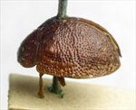
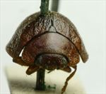
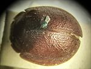
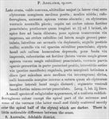

Click on images to enlarge
.jpg){kind=link}

Paropsis adelaidae type specimen, lateral view
.jpg){kind=link}

Paropsis adelaidae type specimen, anterior view
.jpg){kind=link}

Paropsis adelaidae type specimen, dorsal view
{kind=link}

Paropsis adelaidae, description
Name
Trachymela adelaidae (Blackburn, 1897)
Type specimen
Location: BMNH
Label data: “Type” (red-bordered circle), “6233 Ad. T”, “Blackburn coll. 1910-236.”, “Paropsis Adelaidae Blackb.”
Female; Size: 5.95 x 4.95 x 2.9 mm; A-A: 0.96 mm, HCE: 1.39mm.
Head and pronotum uniformly brown; elytra brown, somewhat wrinkled transversely, with just a scatter of relatively small and inconspicuous verrucae (just slightly darker than their surrounds); ventrally brown, with darker patches (especially on thoracic segments).
Original description
[Original description shown in figure, translated from Latin using ChatGPT, 04/2026]
Broadly oval, very convex, the greatest height (seen from the side) situated before the middle of the elytral margin; moderately shining; reddish-ferruginous, the antennae dark toward the apex; some of the elytral verrucae pitchy. Head rather closely but not strongly punctulate. Prothorax broader than long as 2⅔ to 1, broadened from the apex almost to the base, behind the apex scarcely transversely impressed, rather closely and more finely (at the sides more coarsely) punctulate; sides moderately arcuate, scarcely flattened; posterior angles absent. Scutellum scarcely or sparsely finely punctulate. Elytra not depressed beneath the humeral callus, scarcely impressed behind the base, somewhat in rows and rather strongly (toward the sides more coarsely, toward the apex more finely) punctured; verrucae small, scattered, especially situated in the posterior part; interstices anteriorly scarcely, posteriorly distinctly rugulose; marginal portion very broad, separated from the disc by a groove scarcely interrupted before the middle; the inner margin of the humeral callus not more distant from the suture than from the lateral margin of the elytra. Basal ventral segment rather strongly but not closely punctured. Length 3 lines (~6.4 mm), width 2½ lines (~5.3 mm).
Notes
Blackburn (1897) deals with P. adelaidae as part of his 'subgroup iv' (i.e., those species without "strongly marked characters", whose greatest height is considerably in front of the middle of the elytral margin). Within that group, he characterises it as:
This could be either Ta120, Ta159 or Ta174, all of which are commonly found not too far from Adelaide. Its dearth of dark markings dorsally points towards Ta120, but these three species are so similar and overlap so extensively in their external morphological characters that it may be impossible to determine the species for this female specimen. Should the inner surface of the epipleura be partially dark or black, then it may be more likely to be Ta174.(1) prothorax not (or scarcely) explanate at sides;
(2) the verrucae unpunctured or nearly so;
(3) elytra not having a sharply defined discal transverse wheal-like ridge;
(4) subhumeral depression wanting;
(5) elytral interstices but little rugulose, at least not to the extent of obscuring the punctures and verrucae;
(6) elytra (at least on hinder part) studded with sharply defined isolated bead-like verrucae;
(7) the elytral verrucae small;
(8) the elytral puncturation fairly strong and not particularly close;
(9) the postbasal impression of elytra not particularly strong and not at all defined behind;
(10) the humeral calli small and pale ferruginous in colour;
(11) form subcircular, marginal part of elytra strongly out-turned.
Copyright © 2026. All rights reserved.